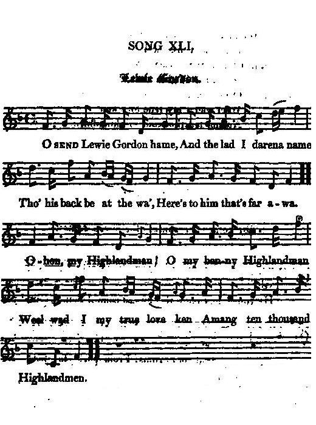
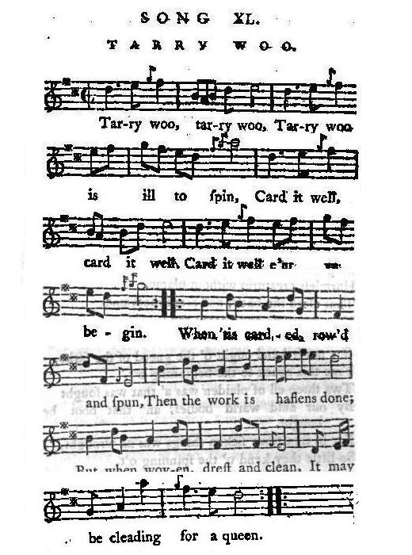
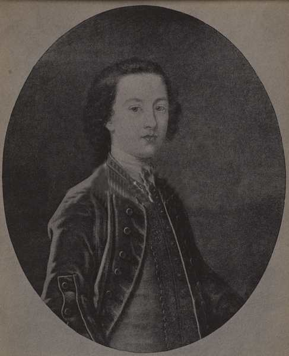

Lewie Gordon
Lord Lewis Gordon, third son of the Duke of Gordon
by Dr Alexander Geddes (1737 - 1802), Roman Catholic priest and theologian.
From "The True Loyalist", page 32, 1779 and
from Joseph Ritson's "Scots Songs", vol. II, page 106, class III, N°30, 1794
(both versions are but slightly different)
Tune - Mélodie
"Lewie Gordon - and original set of "Tarry Woo"
from Hogg's "Jacobite Relics" 2nd Series N°41, page 81, 1821
Alternate tune
"New" (in 1821) set of "Tarry woo"
from Joseph Ritson's "Scotish Songs", vol.1
Sequenced by Christian Souchon


|
To the song:
"Has always been a popular ditty, and was supposed to have been made by a Mr Geddes, (a Roman Catholic) priest at Shenval in the Enzie (Banffshire), on the Lord Lewis Gordon, third son to the duke of Gordon...The air is the original or northern set of " Tarry woo.". Source: James Hogg in "Jacobite Relics 2nd series. The whole song after the first line alludes to Prince Charles Stuart. Joseph Ritson who published this song to the same tune in 1794 ("Scotish Songs", vol. 2, p.106, class III, N°30), taken from "common collections", adds in a remark: "Sometimes directed to be sung to the tune of "Tarry woo" of which the present is possibly but an alteration". It runs: "Tarry woo, tarry woo Tarry woo is ill to spin. Card it well, card it well, Card it well ere you begin When 'tis carded, rowed and spun, Then the work is hastens done. But when woven drest and clean, It may be cleading for a queen." For another cloth working song, see Morag . |
A propos de la chanson:
"Cette chanson a toujours été populaire. On dit que c'est un prêtre catholique de Shenval en Enzie, M. Geddes , qui l'a composée sur Lord Lewis Gordon, le troisième fils du Duc de Gordon .L'air est la version originale et écossaise de 'Tarry woo' (La laine en suint)." Source: James Hogg in "Jacobite Relics" 2ème série. L'ensemble du chant, sauf la première ligne, se rapporte à Charles Edouard Stuart. Joseph Ritson qui publia ce chant avec le même timbre en 1794 ("Scotish Songs", vol. 2, p.106, classe III, N°30), trouvé dans un "recueil du commerce", remarque, quant à lui: "On indique parfois 'sur l'air de Tarry woo", dont la présente mélodie est peut-être dérivée". Les paroles de "Tarry woo" sont les suivantes: "Laine en suint, laine en suint A filer ne se prête point. Il faut d'abord bien la carder Pour pouvoir la travailler. Carder, peigner et filer, Ensuite on va vite en besogne. Mais une fois tissée, montée et nettoyée La laine peut vêtir une reine." Un autre chant de travail des tissus: Morag . |

|
LEWIE
(LEWIS)
GORDON
1. O! Send Lewie Gordon hame, And the lad I darena name! Though his back be at the wa', Here's to him that's far awa! CHORUS Ochon! ( Hech hey! ) my Highland man, Oh, my bonny ( My handsome, charming ) Highland man; Weel would I my true love ken, Amang ten thousand Highlandmen. 2. Oh! to see his tartan trews ( trouze ), Bonnet blue, and laigh-heel'd shoes; Philabeg aboon his knee; That's the lad that I'll gang wi'! Ochon! &c. 3. The princely youth that I do mean, (This lovely Lad of whom I sing) Is fitted for to be a king; ( And ) On his breast he wears a star; You'd take him for the god of war. Ochon! &c. 4. Oh to see this princely one Seated on his father's throne! Disasters a' ( Our griefs ) would ( then ) disappear, Then begins ( We'd celebrate ) the jub'lee year! Ochon! my Highlandman! O my bonny Highlandman! Weel wad I my true lore ken Among ten thousand Highlandmen. Source: "The Jacobite Relics of Scotland, being the Songs, Airs and Legends of the Adherents to the House of Stuart" collected by James Hogg, 2nd volume, published in Edinburgh by William Blackwood in 1821. |
 Lord Lewis Gordon |
LOUIS GORDON
1. Que reviennent Louis Gordon Et celui dont je tais le nom, Tous les deux à l'exil acculés, Buvons donc à leur santé! REFRAIN Ochon! Beau montagnard, O mon séduisant montagnard, Entre dix mille je me fais fort, De te reconnaître encor. 2. Voir le tartan de ses bas, Son bonnet bleu, ses souliers plats Son kilt qui laisse voir ses genoux Et le suivre n'importe où. Ochon!... 3. Le jeune Prince est, je crois, Bien fait pour devenir un roi; D'une étoile s'orne son gilet. On dirait un dieu guerrier. Ochon!... 4. Puisse-t-il siéger sous peu Sur le trône de ses aïeux! L'on verrait, après tant de malheur, Poindre une ère de bonheur! Ochon! Beau montagnard, O mon séduisant montagnard, Entre dix mille je me fais fort, De te reconnaître encor. (Trad. Christian Souchon(c)2010) |
|
"Lord Lewis Gordon, third son to Alexander, second Duke of Gordon, being bred to sea service, was a lieutenant on board a ship of war; but, on the rising in 1745, declared for prince Charles; raised a regiment of two battalions; defeated the adherents of George, under the laird of Mcleod, near Inverury, 23d September that year, and then marched to Perth; after the battle of Culloden he escaped abroad ; was attainted by act of parliament, 1746; and died at Montreuil, in France, on the 15th of June, 1754."
Source: James Hogg in "Jacobite Relics" 2nd series. |
"Lord Lewis Gordon, troisième fils d'Alexandre second Duc de Gordon, fut élevé pour servir dans la marine et devint enseigne de vaisseau. Mais lorsqu'éclata la révolte de 1745, il se rangea du côté du Prince Charles et constitua un régiment de deux bataillons. Il battit l'armée royale sous le commandement de McLeod à Inverury, le 23 septembre 1745, puis marcha sur Perth. Après la bataille de Culloden, il s'enfuit à l'étranger. Il fut déchu de ses droits sur décision du Parlement en 1746. Il mourut à Montreuil en France le 15 juin 1754."
Source: James Hogg in "Jacobite Relics" 2ème série. |
|
|
|